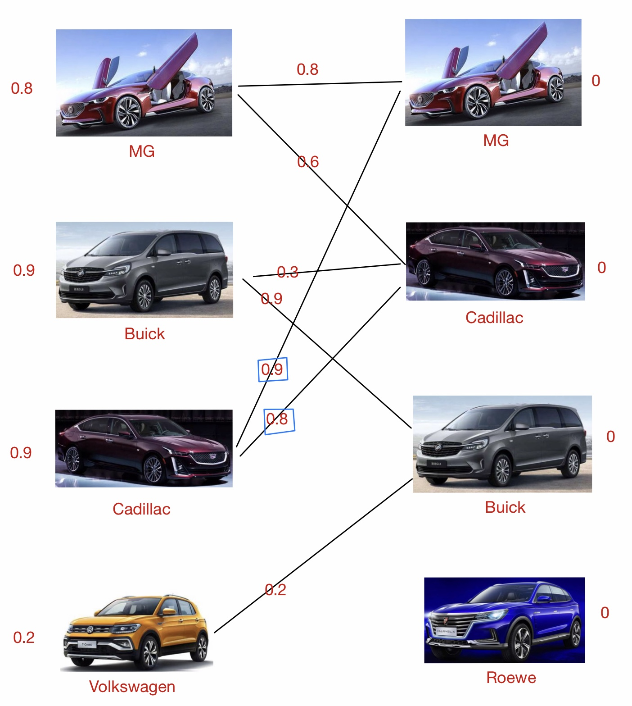
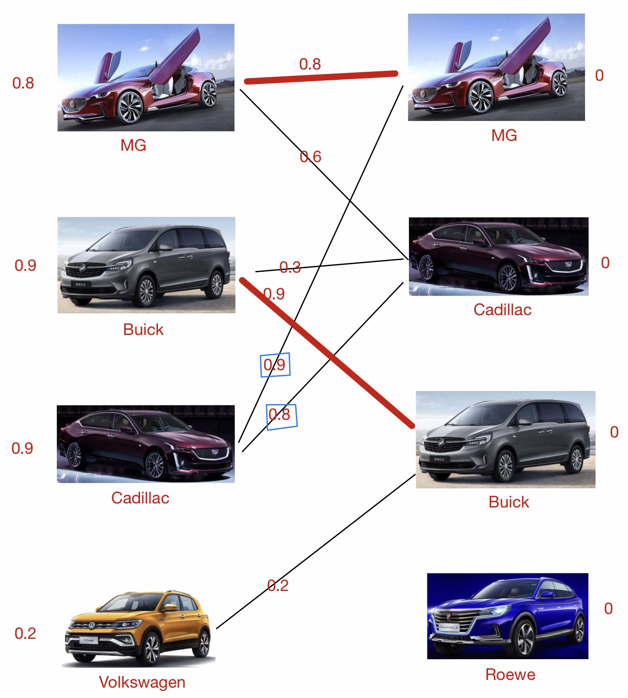
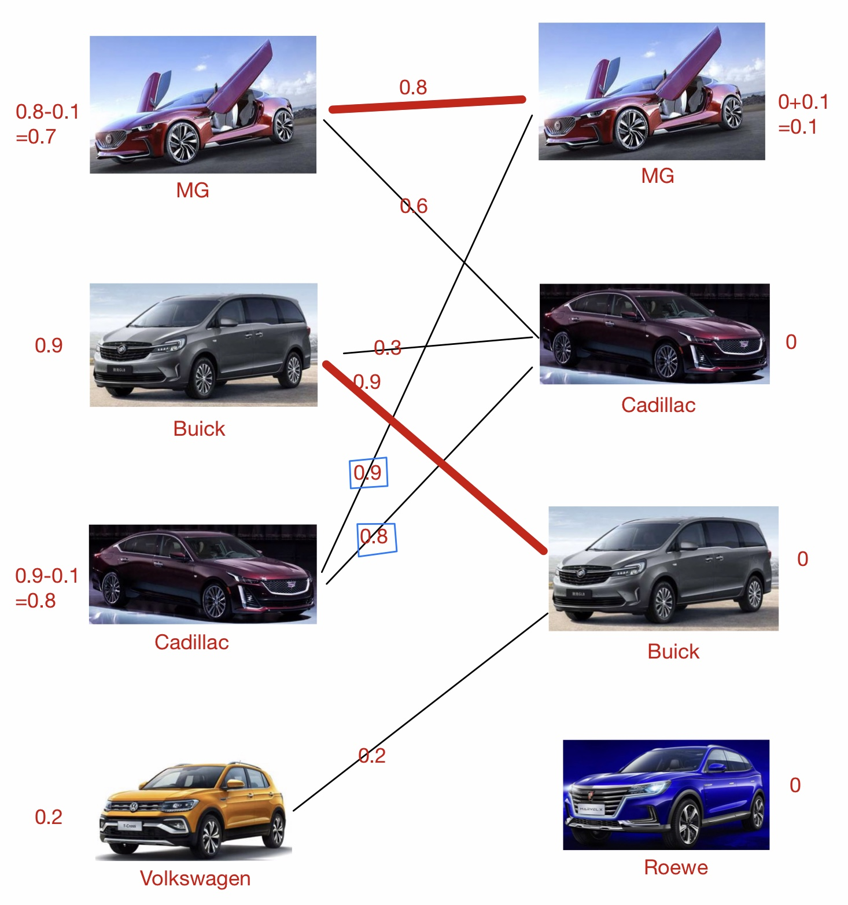
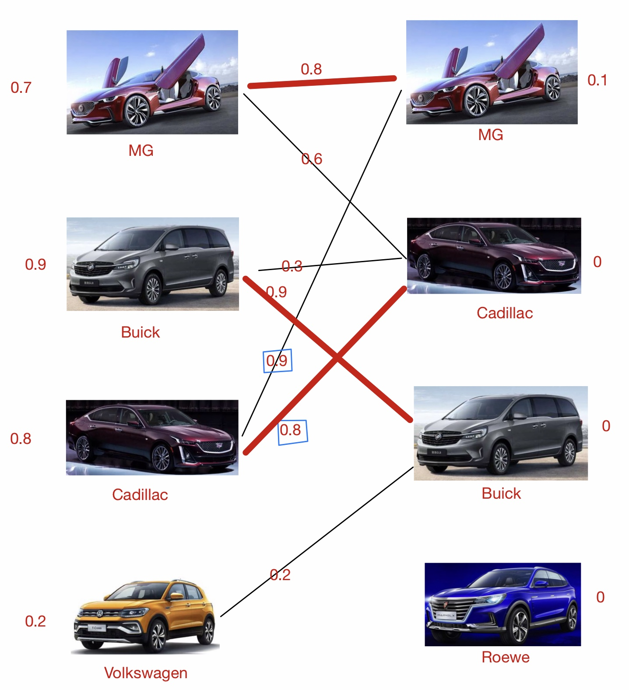

Multi-sensor fusion
1, CalcRelateValue
1.1 For Mobileye, Velodyne and surround-view-cameras
double PosXscore = PercentScore( DeltaPosX, DeltaPosX_TH );
double PosYscore = PercentScore( DeltaPosY, DeltaPosY_TH );
double VelXscore = PercentScore( DeltaVelX, DeltaVelX_TH );
double VelYscore = PercentScore( DeltaVelY, DeltaVelY_TH );
double Widtscore = PercentScore( DeltaWidt, DeltaWidt_TH );
if( m_gstTrkSta[MobileyeTracked].bTracked )
double Total = PosXscore * 0.2f + PosYscore * 0.4f + VelXscore * 0.1f + VelYscore * 0.1f +Widtscore * 0.2f;
else
double Total = PosXscore * 0.2 + PosYscore * 0.4 + VelXscore * 0.2 + VelYscore * 0.2;
return Total;
1.2 For MWR
MWR do not measure width
double DeltaPosX = fabs( SimMeasurement( PosX_CORR ) - object.fRelX );
double DeltaPosY = fabs( SimMeasurement( PosY_CORR ) - object.fRelY );
double DeltaVelX = fabs( SimMeasurement( VelX_CORR ) - object.fAblVelX );
double DeltaVelY = fabs( SimMeasurement( VelY_CORR ) - object.fAblVelY );
double Total = PosXscore * 0.3 + PosYscore * 0.1 + VelXscore * 0.4 + VelYscore * 0.2;
return Total;
1.3 For HDmap
HDmap do not measure moving objects, only has x & y
double DeltaPosX = fabs( SimMeasurement( PosX_CORR ) - object.fRelX );
double DeltaPosY = fabs( SimMeasurement( PosY_CORR ) - object.fRelY );
double Total = PosXscore * 0.6 + PosYscore * 0.4;
return Total;
2, Calculate Correlation Matrix
//o for object, t for tracker;
m_pstCorrelationMatrix->pfCorrelationValue[o][t].fValue = m_vecTrackers.data()[t].CalcRelateValue(SimMeasurement, m_pstSensorObjects->data()[o], Transform );
if ( m_pstCorrelationMatrix->pfCorrelationValue[o][t].fValue > 0.0001f)
{
m_pstCorrelationMatrix->pfCorrelationValue[o][t].fValue = m_pstCorrelationMatrix->pfCorrelationValue[o][t].fValue *0.98f + GetCorrelationPriority( m_vecTrackers.data() [t], m_pstSensorObjects->data()[o] );
}
else
{
m_pstCorrelationMatrix->pfCorrelationValue[o][t].fValue = 0.0f;
}
GetCorrelationPriority
1, tracked by the same sensor and the same objectID->the highest priority
2, tracked by the same sensor but not the same objectID->high priority
3, tracked by another sensor->mid priority
4, a new detection, not tracked before->low priority
3, GetMaximumAssociationValue
3.1 Nearest Neighbor Algorithm
Get maximum association value from the data association matrix, and label the corresponding row and column as associated. If the object and the tracker is associated, the corresponding row and column is set to -1.0f.
3.2 Hungarian Algorithm(Kuhn-Munkres Algorithm)
It's a combinatorial optimization algorithm for assignment problem. The Correlation Matrix calculated in last module as below:
The Cadillac in tracker, has a mismatch with MG in detector, the correlation coefficient larger than the Cadillac's. This happens a lot in our project, but the Hungarian Algorithm can still find a correct solution.
The algorithm is easier to describe if we formulate the problem using a bipartite graph. In the graph, the left shows trackers, and the right shows the new detector.
3.2.1 Step 1, valuation
Each tracker has a mark for it's history record, and each new detector has a mark initialized as 0. The weights between them are values in correlation matrix.

3.2.2 Step 2, matching
3.2.3 Step 3, conflict management
The rule of matching is that, only the weights equal or larger than tracker's mark can be matched. If conflict happens, the conflict trackers accept a penalty, and the conflict detector accept an award, the penalty and the award here set as 0.1.
When the Cadillac in tracker try to match with MG in detector, because it has the highest weight - 0.9, but find the MG has already been matched with the MG in left. The MG in left try to make a concession but failed, because it doesn't have another match which weight larger than the tracker mark(0.8) can be choosen. In this condition, a conflict happens. The MG and Cadillac in tracker minus 0.1, and the MG in detector add 0.1.

3.2.4 Back to step 2 with new marks
As the weight between the Cadillac in tracker and the Cadillac in detector, the 0.8 meet the "larger or equal tracker mark" requirement, they can match now.

But for the Volkswagen, it can not solve the conflict before it's mark minus to 0 after 2 iterations. So, it can not be matched, and the following is the final solution.
3.3 Auction Algorithm
This problem has several approaches, but the successive shortest paths (SSP) approach has been repeatedly shown to perform well for data association.
Given a single source (row), one or more targets (available columns), and a nonnegative cost matrix(C0), the problem at each step becomes the classic shortest path problem as solved by Dijkstra's algorithm.

Update Rule: new_profit= max_profit - 2nd-max_profit+ ε + pre_profit
// the largest weight tracker: u
max = 0;
for (i = g->cd[u]; i<g->cd[u + 1]; i++)
{
v = g->adj[i];
w = g->w[i];
if ((double)w - p[v]>max)
{
max = (double)w - p[v];
wmax = w;
k = v;
}
}
if (max == 0)
{
// convert to another tracker 'u'
break;
}
// the second-largest weight tracker: u
max2 = 0;
for (i = g->cd[u]; i<g->cd[u + 1]; i++)
{
v = g->adj[i];
if (v != k) // k has matched with the largest weight tracker 'u'
{
w = g->w[i];
if ((double)w - p[v]>max2)
{
max2 = (double)w - p[v];
}
}
}
p[k] += max - max2 + eps;
a[k] = u;
aw[k] = wmax;
res += wmax;
4, Dempster/Shafer theory
It also called evidence theory or Dempster–Shafer theory (DST), is a general framework for reasoning with uncertainty, this theory allows combining evidence from different sources and arrive at a degree of belief.
4.1 build mass function
if(eSensorType == MOBILEYE)
{
case ME_OBJECT_TYPE_PEDESTRIAN:
gfMass[PEDESTRIAN] = 0.9f;
gfMass[ANY] = 0.1f;
break;
}
if(eSensorType==surroundViewCamera)
{
case SV_OBJECT_TYPE_PEDESTRIAN:
gfMass[PEDESTRIAN] = 0.75f;
gfMass[ANY] = 0.25f;
break;
case SV_OBJECT_TYPE_BIKE:
gfMass[MOTORBIKE] = 0.7f;
gfMass[ANY] = 0.3f;
break;
}
4.2 Normalize mass function
float CLASSIFICATION::CalNormalizationConstant(const float* gfMass_MWR, const float* gfMass_ME, const float* gfMass_SV)
{
float K = SUM(gfMass_MWR[PEDESTRIAN_BICYCLE] * gfMass_ME[PEDESTRIAN] * gfMass_SV[PEDESTRIAN]+...)
}
4.3 CalMassCombination
For each class, combine and normalize their possibility, take the "PEDESTRIAN" as an example.
gfMass_Combination[PEDESTRIAN] = (1.0f/K) * (gfMass_MWR[PEDESTRIAN_BICYCLE] * gfMass_ME[PEDESTRIAN] * gfMass_SV[PEDESTRIAN]
+ gfMass_MWR[PEDESTRIAN_BICYCLE] * gfMass_ME[PEDESTRIAN] * gfMass_SV[ANY]
+ gfMass_MWR[PEDESTRIAN_BICYCLE] * gfMass_ME[ANY] * gfMass_SV[PEDESTRIAN]
+ gfMass_MWR[ANY] * gfMass_ME[PEDESTRIAN] * gfMass_SV[PEDESTRIAN]
+ gfMass_MWR[ANY] * gfMass_ME[PEDESTRIAN] * gfMass_SV[ANY]
+ gfMass_MWR[ANY] * gfMass_ME[ANY] * gfMass_SV[PEDESTRIAN]);
4.4 DempsterShaferJudge
if((fMaxScore - fSencondScore) > 0.2 && gfMass_Combination[ANY] < 0.5 && fMaxScore > gfMass_Combination[ANY])
return (FRAME_DISCERNMENT)nMaxScoreIndex;
else
return ANY;